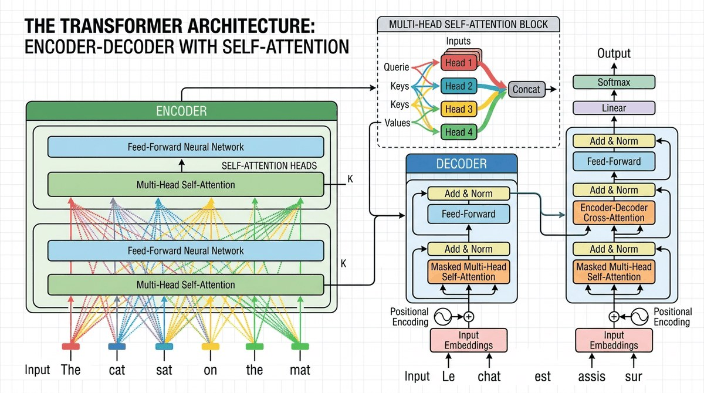

"Attention is all you need. Well, that and a few hundred billion parameters, a small country's worth of electricity, and a team of researchers who haven't slept since 2017."
Attn, Sleep-Deprived AI Agent
Chapter 3 introduces attention as a mechanism. This chapter assembles attention into the Transformer, the architecture every modern LLM is built on. You will see how one token gets computed end-to-end (Section 3.1), then build a working decoder-only Transformer from scratch in PyTorch (Section 3.3). The 300 lines of code at the end of this chapter are the most important code in the book; everything from here on is engineering on top of this core.
Chapter Overview
This is the central module of the entire book. The Transformer, introduced in the landmark 2017 paper "Attention Is All You Need," is the architecture behind every modern large language model. Building on the attention mechanisms introduced in Chapter 03, this chapter will dissect the Transformer layer by layer, build one from scratch, survey the many variants that have emerged since (explored further in Chapter 07: Modern LLM Landscape), understand the GPU hardware it runs on, and explore the theoretical limits of what Transformers can and cannot compute.
By the end of this chapter you will be able to read a Transformer implementation, modify it confidently, reason about its computational cost (a foundation for the inference optimization techniques in Chapter 09), and understand why certain architectural choices (positional encoding, layer normalization, residual connections) are not arbitrary but deeply principled.
In 1995 a strange new building called Bilbao Guggenheim opened in northern Spain, and within a decade every museum on Earth was hiring Frank Gehry. The 2017 Transformer paper had the same effect on AI. Every modern LLM, every multimodal model, almost every protein folder is a variation on the same titanium-clad blueprint, and every chapter after this one assumes you can read it.
The transformer is the architecture every chapter after this assumes you understand. We build it from the ground up: token to embedding, attention, residual plus LayerNorm, feed-forward, repeat. By the end of the chapter you can sketch a 300-line decoder-only transformer from memory and reason about its memory and compute budget.

- Walk through the original Transformer paper and explain every component from positional encodings to output probabilities
- Implement a complete decoder-only Transformer in ~300 lines of PyTorch (using skills from Chapter 00), training it on a small dataset
- Compare encoder-only, decoder-only, and encoder-decoder architectures with concrete use cases, preparing you for Chapter 06's pretraining discussion
- Explain efficient attention mechanisms (linear attention, sparse attention, FlashAttention) and their tradeoffs
- Describe State Space Models (SSMs/Mamba), Mixture-of-Experts (MoE), RWKV, Gated Attention, and Multi-head Latent Attention
- Understand GPU architecture (SMs, memory hierarchy, bandwidth) and write a basic Triton kernel
- State the universal approximation and computational complexity results for Transformers, and explain how chain-of-thought reasoning (a concept revisited in Chapter 11: Interpretability) extends their power
Prerequisites
- Chapter 0: Comfortable with PyTorch tensors, autograd, and training loops
- Chapter 1: Familiarity with word embeddings, vector spaces, and similarity measures
- Chapter 1: Understanding of tokenization and vocabulary construction
- Chapter 2: Solid grasp of attention mechanisms (dot-product attention, multi-head attention, causal masking)
- Linear algebra: matrix multiplication, softmax, norms
Sections
- 3.1 Transformer Anatomy: Attention, FFN & LayerNorm The original transformer block: input representation and positional encoding, scaled dot-product and multi-head attention, the position-wise feed-forward network, residual connections, and layer normalization. Entry
- 3.2 Transformer Init, Causal Mask & Forward Pass Weight initialization, the causal mask for decoder-only models, the complete forward pass end to end, information flow through the residual stream, and parameter counting. Entry
- 3.3 Build a Transformer: Architecture & Data Prep Build a decoder-only Transformer from scratch in PyTorch: the model implementation walked through line by line, and the data preparation pipeline. Entry
- 3.4 Transformer: Training Loop, Shapes & Debugging The training loop, tracing tensor shapes through the network, running the lab end to end, and the bugs every from-scratch Transformer build hits. Entry
- 3.5 Transformer Variants & Efficiency This section dives deeper into a topic that is not strictly required for the rest of the book. Intermediate
- 3.6 GPU Fundamentals & Systems Modern GPUs are fundamentally throughput machines designed to keep thousands of cores busy simultaneously. Entry
- 3.7 Transformer Expressiveness Theory This section dives deeper into a topic that is not strictly required for the rest of the book. Advanced
- 3.8 Beyond Attention: SSMs, MoE, and Modern Variants Alternative sequence-modeling paradigms and capacity-scaling tricks (State Space Models, RWKV, Mixture-of-Experts, Gated Linear Units, Multi-Head Latent Attention) that sit alongside, and inside, the Transformer. Advanced
What's Next?
Next: Chapter 4: Decoding Strategies & Text Generation. A trained transformer is a probability distribution over the next token. That is not text. Chapter 4 covers the algorithms that turn that distribution into useful output: greedy and beam search, top-k and nucleus sampling, speculative decoding, and the newer diffusion-language-model approach that breaks the left-to-right assumption entirely. Spoiler: temperature 0 is rarely what you want.